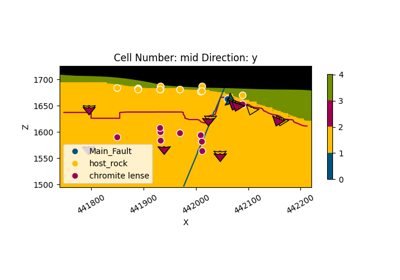
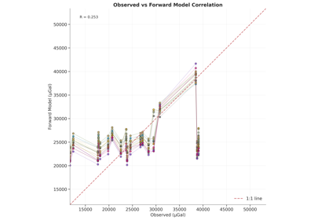
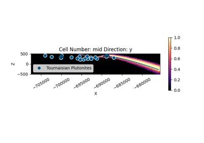
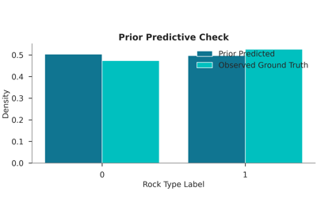
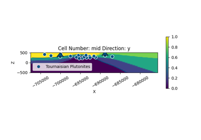
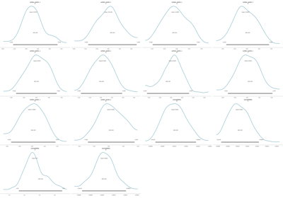

Mineye-Terranigma Documentation¶
Overview¶
Mineye-Terranigma is a research project within the MINEYE framework, developing
probabilistic methods to integrate Earth Observation (EO) data into the construction and
updating of 3D geological models. It provides a robust, computationally efficient
framework for Bayesian geological modeling and geophysical joint inversion.
The project builds upon the open-source packages GemPy (for implicit geological modeling) and BaySeg (for Bayesian segmentation of remote sensing data), substantially modernized and extended for scalable application in exploration workflows.
Core Capabilities:
3D Geological Modeling: Build implicit 3D models from structural data using GemPy v3
Geophysical Forward Modeling: Compute gravity and magnetic (TMI) responses from density and susceptibility distributions
Probabilistic Inference: Quantify uncertainty using Pyro with NUTS (No-U-Turn Sampler) and PyTorch
EO Data Integration: Incorporate EnMAP hyperspectral classifications as categorical and ordinal probabilistic constraints
Joint Inversion: Simultaneously evaluate multiple data types (gravity, magnetics, EO) with likelihood-balance diagnostics
Framework Modernization¶
The probabilistic geomodelling framework of GemPy was comprehensively modernized to support scalable Bayesian inference and EO data integration. Key improvements include:
PyTorch Migration: Refactored from the legacy Theano backend to a fully vectorized PyTorch framework, significantly improving performance, numerical stability, and maintainability
High-Level Probabilistic API: Unified interface for defining models, priors, and likelihoods while maintaining flexibility for advanced use cases
Unified Data Model: Consistent handling of scalar fields, geological surfaces, and observation datasets across heterogeneous data sources
GPU-Ready Architecture: Native pathway for GPU acceleration of computationally intensive operations
The migration removed deprecated dependencies, improved memory handling through optimized data strategies, and introduced enhanced methods for scalar field-based segmentation critical for stable model convergence.
Forward Modeling Operators¶
Forward modeling operators translate implicit geological representations into physically meaningful property fields, enabling simulation of measurable geophysical responses. Implemented for potential field methods (gravity and magnetics), these operators are optimized for repeated evaluation in probabilistic workflows.
Gravity: Density contrast distributions derived from lithological model outputs, supporting spatially varying densities within units via a discretized volumetric sensitivity formulation.
Magnetics (TMI): Magnetic susceptibility distributions accounting for induced magnetization driven by the ambient magnetic field. Supports multi-scale datasets and spatially heterogeneous distributions.
EO-Derived Categorical Constraints: Differentiable ordinal-probability formulation mapping continuous GemPy scalar fields to class probabilities through sigmoid transitions across geological boundaries. Soft probabilistic representations are used instead of hard labels, ensuring that classification uncertainty is coherently propagated from EO data into geological models.
Basic Examples¶
Foundational workflows for 3D geological modeling and geophysical forward modeling. These examples introduce core concepts using real data from the Tharsis mining district in Spain.

Geological Model with Faults - Soricom Chromite Deposit
Probabilistic Modeling & Bayesian Inference¶
Advanced examples demonstrating Bayesian inversion using the No-U-Turn Sampler (NUTS) via Pyro. The workflow includes prior and posterior predictive checks, hierarchical per-station noise modeling, and joint inversion of multiple geophysical and EO datasets.
Inference Strategy: The framework combines prior geological knowledge with likelihood functions defined by the misfit between observed data and simulated responses. Inference is carried out using NUTS MCMC, with each iteration updating geological parameters, recomputing the implicit model, and evaluating forward responses.
Joint Inversion: A unified likelihood function simultaneously evaluates gravity, magnetics, and EO-derived categorical constraints assuming conditional independence. Likelihood-balance diagnostics verify that no single dataset numerically dominates the joint posterior. Multi-grid evaluation allows different data types to be enforced on their native observation supports.
Uncertainty Quantification: Posterior ensembles are analyzed using variance fields, information entropy maps, and ensemble-based statistics to identify well-constrained regions versus zones of high uncertainty.

Bayesian Gravity Inversion: Complete Workflow

Bayesian Magnetic Inversion: TMI Inversion Workflow

Bayesian EnMap Inversion: Categorical Likelihood and Ordinal Probabilities

Bayesian Joint Inversion: Gravity and EnMap

Bayesian Magnetic Inversion: Soricom Chromite Lens
Hyperspectral Segmentation¶
Workflows for lithological segmentation of EnMAP hyperspectral data using Bayesian inference. These examples cover feature extraction, preprocessing, and model comparison.
Application Case Study: Tharsis AOI 1¶
A series of Bayesian inversions were performed on the Tharsis AOI 1 region demonstrating the framework’s capabilities. Prior distributions are defined from the initial conceptual structural model and available petrophysical information.
Gravity Inversion: Regional gravity observations constrain large-scale density contrasts and deep interface geometries. Hierarchical per-station noise modeling improves robustness against heterogeneous data quality.
Magnetic (TMI) Inversion: Total Magnetic Intensity data provides higher sensitivity to specific lithological variations and shallower structural features, complementing gravity-based results.
EnMAP EO Constraints: Hyperspectral data from the EnMAP satellite provides high-resolution surface lithology information, substantially improving spatial consistency near the surface.
Joint Inversion: Combined gravity and EnMAP constraints capitalize on complementary strengths — EO anchors near-surface boundaries while gravity constrains deeper volumetric distributions. Likelihood-balance checks and shared-parameter inference across multi-grid observations improve confidence that both deep structure and surface evidence are jointly honored.
Getting Started¶
API Reference¶
Detailed documentation of the Mineye-Terranigma Python API.
Indices and Tables¶

Mineye-Terranigma
Implicit Geological Modeling & Bayesian Geophysical Inversion